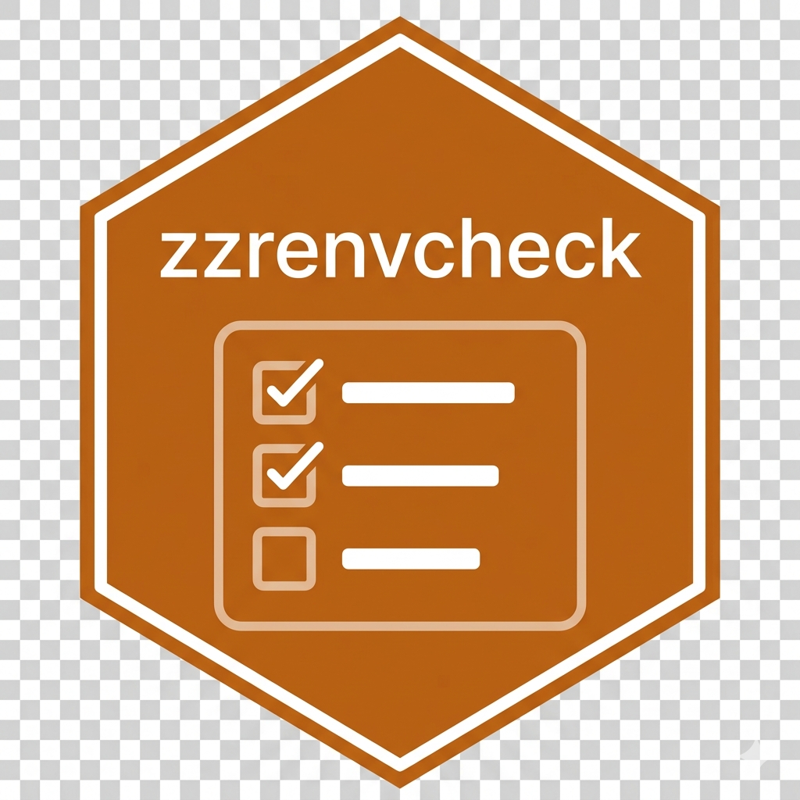

renv vs zzrenvcheck: Complementary Tools for Reproducible Dependencies
Ronald (Ryy) G. Thomas
2026-07-04
Source:vignettes/renv-vs-zzrenvcheck.Rmd
renv-vs-zzrenvcheck.RmdTwo tools, two questions
A reproducible R project keeps three descriptions of its dependencies in agreement:
- the code: the packages the scripts, functions, tests, and reports actually load;
- the DESCRIPTION file: the packages the project
formally declares under
ImportsandSuggests; - the renv.lock file: the exact package versions pinned for reproduction.
renv and zzrenvcheck both serve
reproducibility, but they govern different relationships among these
three. They are complementary, not alternatives.
- renv manages the environment. It reconciles the installed library with the lockfile, and can infer the packages the code uses. Its question is: is what is installed what the lockfile records, and can the environment be recreated elsewhere?
- zzrenvcheck audits the declarations. It compares the code, the DESCRIPTION, and the renv.lock, and reports where they disagree. Its question is: is every package the code uses both declared in DESCRIPTION and pinned in renv.lock, and is anything declared that the code no longer uses?
renv has no notion of DESCRIPTION; zzrenvcheck neither
installs packages nor manages the library. Neither tool subsumes the
other.
What renv does
renv operates on the library and the lockfile:
renv::init() # create a project-private library and renv.lock
renv::snapshot() # record installed versions into renv.lock
renv::restore() # install the versions renv.lock records
renv::status() # report drift among library, lockfile, and used code
renv::dependencies() # list packages detected in the coderenv::status() is the closest renv comes to validation:
it reports when the installed library, the lockfile, and the packages
used in code fall out of sync. It does not read
DESCRIPTION, and it does not judge whether a declared
dependency is still used.
What zzrenvcheck does
zzrenvcheck performs a three-way consistency check, the dependency triad:
zzrenvcheck::check_packages() # report only
zzrenvcheck::check_packages(auto_fix = TRUE) # add missing declarations
zzrenvcheck::check_packages(cleanup = TRUE) # also remove unused
zzrenvcheck::check_packages(strict = FALSE) # skip tests/ and vignettes/It scans the code for the packages actually used (in R/,
and under strict = TRUE also tests/ and
vignettes/), then compares that set against
DESCRIPTION and renv.lock. It reports three
kinds of mismatch:
- used in code but not in DESCRIPTION – an undeclared dependency;
- in DESCRIPTION but not in renv.lock – a reproducibility break, since a collaborator restoring the lockfile would not receive the package;
- in DESCRIPTION but not used in code – a stale declaration.
With auto_fix = TRUE it adds missing entries
(validating, by default, that each is installable from CRAN,
Bioconductor, or GitHub first); with cleanup = TRUE it also
removes unused declarations.
A case each tool catches and the other misses
The tools are complementary because each sees a relationship the other cannot.
renv is satisfied, zzrenvcheck is not. A function
gains a library(glue) call. renv::snapshot()
detects glue, installs it, and pins it in renv.lock;
renv::status() is then clean. But glue was never added to
DESCRIPTION. For a project that is also an R package,
R CMD check will warn, and a collaborator reading
DESCRIPTION will not know glue is required.
zzrenvcheck::check_packages() reports glue as used in code
but not declared in DESCRIPTION.
zzrenvcheck is the only one looking. The last use of
stringr is deleted from the code, but its
Imports entry remains. renv tracks the library and
lockfile, not declarations, so it does not flag a declared-but-unused
dependency. zzrenvcheck reports stringr as declared but unused, and
cleanup = TRUE removes it.
A declared package never reaches the lockfile. A
dependency is added to DESCRIPTION but is not yet called
anywhere, so renv, which locks what the code uses, has no reason to
record it. zzrenvcheck flags it as present in DESCRIPTION but missing
from renv.lock – a latent reproducibility gap.
Using them together
The two tools form a single workflow rather than a choice:
# 1. develop, installing packages inside the renv project
# 2. pin exact versions
renv::snapshot()
# 3. bring DESCRIPTION and renv.lock into agreement with the code
zzrenvcheck::check_packages(auto_fix = TRUE)
# 4. confirm the library still matches the lockfile
renv::status()renv keeps the environment reproducible; zzrenvcheck keeps
the project’s dependency declarations honest. In a zzcollab
compendium this validation runs inside the project’s Docker container,
for example through make check-renv, so it does not depend
on R being installed on the host.
Summary
| Question | renv | zzrenvcheck |
|---|---|---|
| Does the installed library match renv.lock? | yes (status, restore) |
no |
| Can the environment be recreated elsewhere? | yes (restore) |
no |
| Is a used package missing from renv.lock? | partly (on snapshot) |
yes |
| Is a used package missing from DESCRIPTION? | no | yes |
| Is a DESCRIPTION entry unused by the code? | no | yes (cleanup) |
| Is a DESCRIPTION entry missing from renv.lock? | no | yes |
| Install or restore the environment | yes | no |
Use renv to build and reproduce the environment, and zzrenvcheck to
keep the code, DESCRIPTION, and renv.lock
telling the same story.